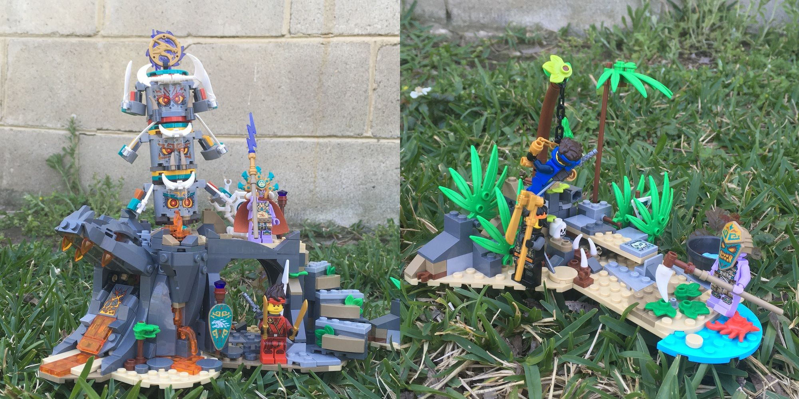
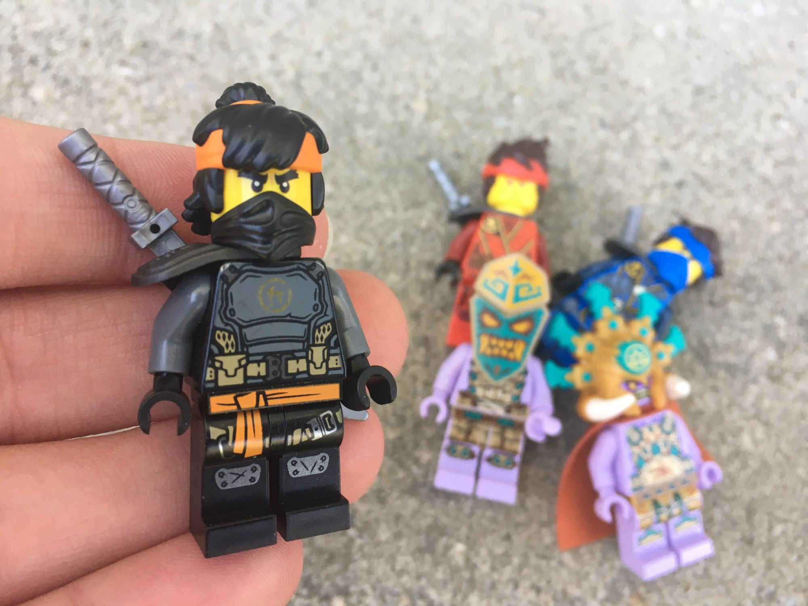

71747 The Keeper's Village Review
Mar 25, 2021
rioforce
71747 The Keeper's Village
Wow! The last review of this series. It's been a good run, all. Don't worry, we'll have more reviews coming right up! But first.... let's get to this one. The Keeper's Village! Apparently, the ninja have made the trek through the jungle and finally have stumbled upon their final destination. They're going to grab the final dragon emblem and rescue Cole (how'd Cole get captured in the first place?).
This set is built upon two main "islands." They both include sand and light blue plates on the bottom to simulate the look of what I assume to be some type of structure on a beach, perhaps. Each island contains a lot of details. Floor details and play details. The smaller island includes this sort of see-saw-type contraption, which I assume is supposed to catapult a minifigure. It doesn't have as much leverage as it needs to adequately launch a minifigure into the air, though, so it more or less just causes the minifig to fall over.
It also has a stud-launcher which can hold three smooth-top 1x1 rounds at a time. I personally have an unreasonable hatred for stud launchers. I guess I lost too many parts when I was a kid even without stud launchers, so the thought of giving a stud launcher to a kid is basically like giving them vacuum fodder. They're way too easy to lose.

The other island's play features are great as well. The tower of faces is creepy and ominous, but fun. It comes apart and has mini ball joints for arms (I love mini ball joints, so this is great!).

It also has an area for play (or animation! We are on Bricks in Motion after all :P ). The details of the prison and the lava mouth structure are great as well. I only regret that I don't have time to properly light this bad boy up and animate and epic jungle battle on it. (But hey, if you get this set, you can do that and let me know! I'd love to watch it.)

Finally, the minifigs. We've seen all these minifigures in the sets before this... except for Cole. I guess it's part of the story that Cole was captured. He was in prison on the back of the box after all. Cole also has a headband, this time in orange. Cool choice to give him some color by using orange. It fits.
Wow! That was a lot of reviewing! I had a lot of fun with these sets, and I hope that if you decide to buy any of them, let me know down below and we can discuss them together!
Come back later, we've got more reviews on the way. (They're not all NINJAGO, I promise ;) )